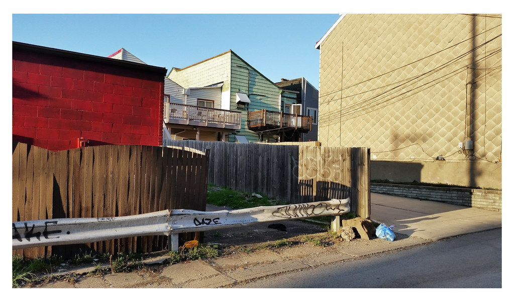
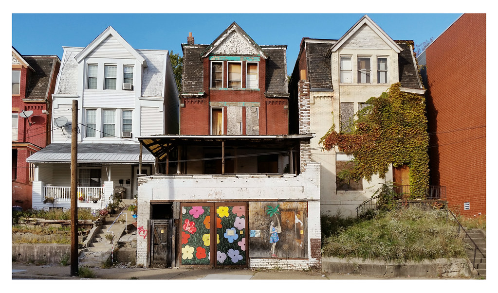

INTRO
Children surrounded by poverty face narrowed futures and, often, shortened lives. In southwestern Pennsylvania's fragmented patchwork of cities, boroughs and townships, they're also likely to live in places without the resources to provide safety, recreation and a healthy environment. The Pittsburgh Post-Gazette, throughout 2019, explored the data tying childhood deprivation to a host of other problems, and delved into communities in which half of the kids live in poverty. Reporters and photographers visited with families doing their best in difficult surroundings, explored the causes and effects, and searched for solutions.
AGE RANGE
While the rates of childhood poverty have been going down since the last decade, it's still a disturbing amount as current as 2019: more than 222,000 children living at or below the poverty level.
This year the Pittsburgh Post-Gazette will take you to a dozen places in which half of the kids are in poverty — a circumstance that hamstrings their futures, and that of the region.
“All of their neighbors are under chronic stress so they don’t have any role models of people who are doing better.”
“We know that concentrated child poverty is a multiplier of the negative impacts of poverty, meaning that in concentrated child poverty, there’s more crime, the built environment is horrible, therefore children don’t go out, or if they go out they’re in danger,” says Benard Dreyer, medical director of policies and past president of the American Academy of Pediatrics and a member of the National Academies of Sciences committee on child poverty. “All of their neighbors are under chronic stress so they don’t have any role models of people who are doing better.”
Allegheny County’s actions and inaction have contributed to Rankin’s problems.

RATES DECLINING
Mark Pence, 25, went to seven high schools before earning his diploma, between stints in juvenile detention and mental hospitals. When he was 8 years old, he stabbed a classmate. He spent part of his childhood living in his mother’s car, and saw his father go to prison when he was a teenager. In 2010, while in detention, he told his mother he was ready to drop out of high school, he said.
He decided to make one last attempt, and he registered at Liberty High School, in Louisville, Ky., an alternative school for underperforming students, where he began visiting the school’s Family Resource Center nearly every day. “Liberty for me was really what saved my life,” said Mr. Pence.
Today, he has college credits and a job — in part, he believes, because of the help available in his hometown.
Those school-based social service centers, affectionately known as “friskies,” for Family Resource and Youth Services Centers of KY (FRYSCKy), are one of many examples of unified services in the Louisville area — a stark contrast to the fragmented structure of southwestern Pennsylvania — enabled by a city-county government, a unified school district, and a concerted push by local leadership to address social issues head-on.
Some say the centers, the governmental unity and a “compassion agenda” are among the reasons Louisville has seen its child poverty rate drop over 10 percent since 2012; 22 percent of the city’s children were in poverty in 2017. Allegheny County began that period with a lower rate of child poverty, around 17 percent, but has made no progress. Nationwide, the child poverty rate dropped two percent from 2012 to 2017.
THE DEPTH OF POVERTY
“High-poverty neighborhoods generally don’t provide access to healthy food and quality public schools or medical care, and they often subject residents to greater exposure to environmental hazards, such as poor air quality or lead. Financial hardships and fear of violence also can cause chronic stress in children, which has been linked with diabetes, heart disease and stroke later in life,” the report noted.
The Pittsburgh Post-Gazette is examining local communities that have high concentrations of child poverty and how it is harmful to children, families and communities, including Rankin, North Braddock, Wilmerding, Duquesne and McKeesport in Allegheny County and Saltlick Township in Fayette County.
“Children whose neighborhoods have quality schools, abundant job opportunities, reliable transportation and safe places for recreation are better positioned for success in adulthood,” Kari King, president and CEO of advocacy group Pennsylvania Partnerships for Children, said in a statement. “However, one in eight Pennsylvania children live in high-poverty neighborhoods that lack these assets.”